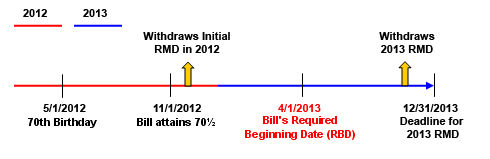
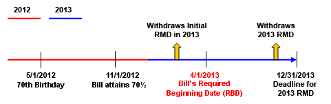

What Happens as of the Required Beginning Date?
With the exception of the initial Required Minimum Distribution (RMD), all subsequent RMDs must be distributed by December 31 each year. Hence, a tax planning decision must be made. Because of the rules regarding the determination of the Required Beginning Date (RBD), some flexibility exists regarding the year in which the initial RMD is taken. The following examples illustrate the two choices that are available.
Meet Mr. Simpson
Bill Simpson turns 70 on May 1, 2012, making him 70½ on November 1, 2012. This makes April 1, 2013 his Required Beginning Date, by which date he must make his initial RMD.
Here are his choices.
Click the icon to view the Choice #1.
Choice #1: Take the first distribution in 2012 and be taxed on those proceeds in the 2012 tax year, with the second distribution in 2013.

Click the icon to view the Choice #2.
Choice #2: Take the first required distribution after December 31, 2012, but before April 1, 2013, thereby meeting the distributions requirements but deferring the taxes on the first distribution for one more tax year. However, because the exemption from the 12/31 distribution date requirement is only applied to the first year's distribution, Bill must also take the RMD for 2013 by 12/31/13, thereby resulting in two distributions in a single tax year.

Electing to take two distributions in one year could push the IRA owner into a higher tax bracket. In planning for RMDs, especially when the IRA is of significant size, the owner needs to calculate the impact of taking the first two distributions in one year, versus taking the first distribution in the calendar year in which the owner actually turns 70½ and the second distribution in the RBD calendar year. Note that the first RMD can be taken anytime from January 1 of the year preceding the RBD through April 1 of the following year (the actual RBD).